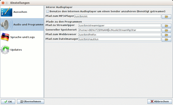
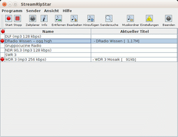
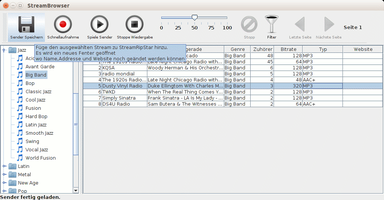
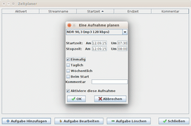

StreamRipStar
Dieser Artikel wurde für die folgenden Ubuntu-Versionen getestet:
Ubuntu 16.04 Xenial Xerus
Ubuntu 14.04 Trusty Tahr
Zum Verständnis dieses Artikels sind folgende Seiten hilfreich:
StreamRipStar  (früher Stripper) ist ein plattformübergreifendes Programm zum Hören und Mitschneiden von Internetradio (Streams). Die Senderwahl erfolgt über SHOUTcast . Man kann weitere Sender aber auch selbst angelegen. Zur Aufnahme greift es auf Streamripper zurück. Des Weiteren ist eine Möglichkeit zum zeitgesteuerten Mitschnitt enthalten. Das Programm gewinnt sicherlich keinen Preis für eine besonders schöne Benutzeroberfläche, allerdings trösten die gebotenen Funktionen locker darüber hinweg.
(früher Stripper) ist ein plattformübergreifendes Programm zum Hören und Mitschneiden von Internetradio (Streams). Die Senderwahl erfolgt über SHOUTcast . Man kann weitere Sender aber auch selbst angelegen. Zur Aufnahme greift es auf Streamripper zurück. Des Weiteren ist eine Möglichkeit zum zeitgesteuerten Mitschnitt enthalten. Das Programm gewinnt sicherlich keinen Preis für eine besonders schöne Benutzeroberfläche, allerdings trösten die gebotenen Funktionen locker darüber hinweg.
Voraussetzungen¶
StreamRipStar basiert auf Java. Die Installation einer Laufzeit-Umgebung (JRE) in der Version 6 oder höher ist daher zwingend Voraussetzung zur Nutzung des Programms.
Installation¶
 StreamRipStar ist nicht in den offiziellen Paketquellen enthalten und muss manuell installiert werden. Zusätzlich wird aber das folgende Paket benötigt [1],wenn Streams mitgeschnitten werden sollen:
StreamRipStar ist nicht in den offiziellen Paketquellen enthalten und muss manuell installiert werden. Zusätzlich wird aber das folgende Paket benötigt [1],wenn Streams mitgeschnitten werden sollen:
streamripper (universe)
 mit apturl
mit apturl
Paketliste zum Kopieren:
sudo apt-get install streamripper
sudo aptitude install streamripper
Manuell¶
Von der Downloadseite  lädt man sich die Datei StreamRipStar0.x.jar herunter (x steht hier für die aktuelle Version). Die Datei StreamRipStar0.x.tar.gz enthält dagegen den Quellcode der Anwendung und wird für die reine Nutzung nicht benötigt. Für eine systemweite Installation sei auf den Artikel opt verwiesen.
lädt man sich die Datei StreamRipStar0.x.jar herunter (x steht hier für die aktuelle Version). Die Datei StreamRipStar0.x.tar.gz enthält dagegen den Quellcode der Anwendung und wird für die reine Nutzung nicht benötigt. Für eine systemweite Installation sei auf den Artikel opt verwiesen.
Hinweis!
Fremdsoftware kann das System gefährden.
Der Programmstart erfolgt in einem Terminal-Fenster [2] mit:
java -jar StreamRipStar0.x.jar
Wer die .jar-Datei stattdessen über einem Dateimanager starten möchte (" -> Öffnen mit... -> Java"), muss diese noch ausführbar machen.
-> Öffnen mit... -> Java"), muss diese noch ausführbar machen.
Bei Bedarf kann man sich einen Programmstarter [3] erstellen. Beispiel (Benutzername, Pfade und Dateinamen anpassen):
[Desktop Entry] Encoding=UTF-8 Name=StreamRipStar Comment[de]=Internet-Radio hören und aufnehmen Exec=java -jar /home/BENUTZERNAME/bin/StreamRipStar0.x.jar Icon=/home/BENUTZERNAME/Bilder/icons/streamripstar_logo.png Terminal=false Type=Application Categories=Multimedia; StartupNotify=false
Einstellungen¶
Beim erstmaligen Start von StreamRipStar wird abgefragt, wo man die Einstellungen des Programms speichern möchte:
im Homeverzeichnis oder
portabel im Ordner, in dem sich StreamRipstar befindet. Letzteres ist vor allem für den mobilen Einsatz auf externen Datenträgern wie USB-Sticks interessant.
|  |
| Einstellungen |
Im nächsten Schritt gelangt man zu den Programmeinstellungen, um z.B. die Sprache zu ändern. Wichtiger ist die Frage, welche Programme genutzt werden sollen. Hier ändert man ggf. den Pfad für den bevorzugten
AudioPlayer (falls man nicht GStreamer verwenden möchte)
An gleicher Stelle wird auch der Speicherort für Aufnahmen festgelegt. Anschließend sollte StreamRipStar neu gestartet werden. Hat man die Variante "im Homeverzeichnis" gewählt, wird die Konfiguration im (versteckten) Ordner ~/.StreamRipStar/ gespeichert.
Nutzung¶
Senderwahl¶
Nun folgt die Auswahl eines Internetradios. Das Programm bietet dazu über "Sendersuche" eine integrierte Übersicht des Stream-Verzeichnisses auf SHOUTcast an. Man sucht sich einen Stream je nach Geschmack aus und klickt anschließend auf die Schaltfläche "Sender speichern" links oben, um den ausgewählten Sender zu übernehmen.
|  |
| Programmoberfläche |
|  |
| Ergebnis einer Sendersuche |
Wer mehr an klassischen Radiosendern interessiert ist, findet im Artikel Internetradio/Stationen eine kleine Auswahl. Zum Anlegen eines eigenen Eintrags dient die Schaltfläche "Hinzufügen" (neben der Schaltfläche "Sendersuche", also nicht im Fenster mit dem Stream-Verzeichnis).
Das Abspielen eigener Einträge ist möglich, wenn der jeweilige Codec installiert ist bzw. durch den AudioPlayer unterstützt wird. Ob auch die Aufnahme funktioniert, hängt vom jeweiligen Stream ab (siehe auch Streamripper FAQ ). Problemlos funktionieren Aufnahmen von Streams im MP3- (.m3u) oder OGG-Format.
Aufnahme¶
|  |
| zeitgesteuerte Aufnahme |
Ein Mitschnitt kann auf zwei Arten erfolgen:
Live-Mitschnitt durch Linksklick
 auf den Aufnahmeknopf
auf den Aufnahmeknopfzeitgesteuerte Aufnahme
Für die zweite Variante legt man mittels der Schaltfläche "Zeitplaner" und "Aufgabe hinzufügen" einen neuen Termin-Eintrag an. Hierzu werden folgende Angaben benötigt:
welcher Sender?
Start- und Stopzeit?
einmalige oder wiederkehrende Aufnahme?
Auf Wunsch kann noch ein Kommentar ergänzt werden, bevor man die Aufgabe mit "Ok" hinzufügt. Das Programm kann auch mehrere Sendungen gleichzeitig aufnehmen – wenn der vorhandene Internet-Anschluss dafür leistungsfähig genug ist.
Relay-Server¶
Wer einen Stream gleichzeitig hören und aufnehmen will, sollte die Relay-Funktion von Streamripper nutzen. Ansonsten wird der Stream immer doppelt heruntergeladen. Diese Funktion ist erreichbar, wenn man im Hauptfenster einen Sender auswählt und sich mit Rechtsklick die "Optionen" anzeigen lässt. Über die Registerkarte "Relayserver & Verbindung" aktiviert man den obersten Eintrag "Erstelle Server von der Aufnahme (für Andere z.B.)" und ändert evtl. den verwendeten Port (nicht unbedingt notwendig).
Nun kann man in vielen Audioplayern eine neue Stream-Quelle mit der URL http://localhost:PORTNUMMER anlegen. Diese Quelle kann aber nur während der Aufnahme und nur auf dem eigenen Rechner empfangen werden.
Links¶
Internetradio aufzeichnen - grafische Alternativen zu StreamRipStar
fadecut - Lösung für die Kommandozeile
Internetradio
 Übersichtsartikel
Übersichtsartikel
- Erstellt mit Inyoka
-
 2004 – 2017 ubuntuusers.de • Einige Rechte vorbehalten
2004 – 2017 ubuntuusers.de • Einige Rechte vorbehalten
Lizenz • Kontakt • Datenschutz • Impressum • Serverstatus -
Serverhousing gespendet von